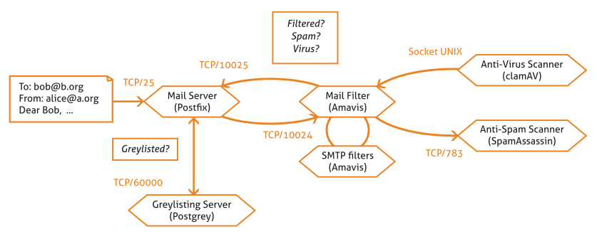
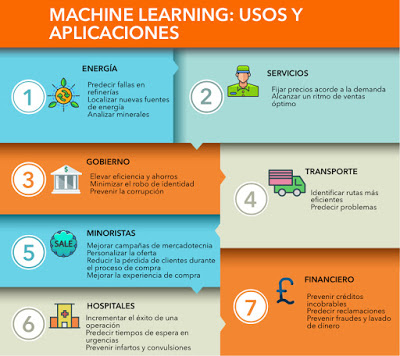

Qué es el machine learning y qué ventajas ofrece a las pymes?. Recuperado de
El Machine Learning es el diseño y estudio de las herramientas informáticas que utilizan la experiencia pasada para tomar decisiones futuras; es el estudio de programas que pueden aprender de los datos. El objetivo fundamental del Machine Learning es generalizar, o inducir una regla desconocida a partir de ejemplos donde esa regla es aplicada.
¡Es poder de resolver las cosas sin que las tengan programadas explícitamente!
EJEMPLO:
El ejemplo más típico donde podemos ver el uso del Machine Learning es en el filtrado de los correo basura o spam. Mediante la observación de miles de correos electrónicos que han sido marcados previamente como basura, los filtros de spam aprenden a clasificar los mensajes nuevos.

Zentyal 6.2 Documentation Filtrado de correo electrónico — Documentación de Zentyal 2.2. Recuperado de
¿Para qué se usa?
Estas son las siete aplicaciones y usos más habituales que tiene esta disciplina:
Diversos sectores de la economia usan el machine learning:
Sector Energia: Permite predecir fallas en refinerías, localizar nuevas fuentes de energía, analizar minerales
Sector Servicios:Ayuda a Fijar precios acorde a la demanda y alcanzar un ritmo de ventas óptimo.
Sector Gobierno: Eleva la eficiencia y ahorros, al minimizar el robo de identidad, prevenir la corrupción, etc.
Transporte: Identificar rutas más eficientes y predecir problemas.
Financiero: El machine learning es cada vez más eficaz detectando posibles casos de fraude en diferentes campos. Pay Pal ya utiliza el machine learning para combatir el blanqueo de dinero; la compañía tiene herramientas que comparan millones de transacciones y pueden distinguir con precisión entre transacciones legítimas y fraudulentas, entre compradores y vendedores.

MACHINE LEARNING: USOS Y APLICACIONES. Recuperado de
¡Aporta a las computadoras una capacidad real de aprendizaje!